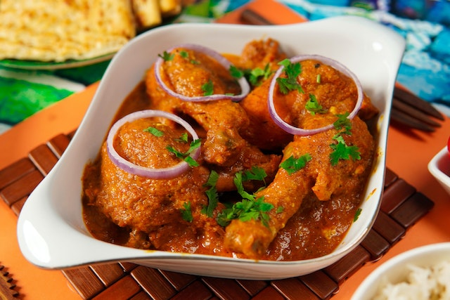

Butter Chicken

Description
Tender and juicy chicken thanks to a deliciously spiced yogurt marinade,
Butter Chicken is ridiculously easy to make. The curry sauce is out of
this world!
Ingredients of Butter Chicken
- For the marinade:
- Raw Chicken
- 2 tsp Red Chilli Powder
- 2 tsp Ginger-Garlic Paste
- 2 tsp Lemon Juice
- 1/2 cup Curd
- For Gravy:
- 2 tsp Oil
- 2 to taste Butter Cubes
- 3 gram cloves
- 1 Cinnamon Stick, sliced
- 1 tsp Mace
How to Make Butter Chicken
- For marination:
-
In a mixing bowl, put raw chicken pieces and add salt, red chilli
powder, ginger garlic paste and lemon juice. Mix well.
- Refrigerate for about 15-20 minutes.
-
Now add curd to the refrigerated mix. Followed by salt, ginger garlic
paste, red chilli powder, garam masala, kasuri methi and mustard oil.
-
Roast the marinated chicken in an oven for about 30 minutes until it
is three-fourth done.
- Prepare the chicken gravy:
- Heat 2 tsp of oil in a pan with butter.
-
Add cloves, cinnamon stick, mace and cardamom. Saute and then add
chopped tomatoes, garlic and ginger. Mix well and then grind well.
-
In another pan, heat another two cubes of butter, along with ginger
garlic paste.
- Add green chilli, cardamom powder and cream. Mix well.
For more recipes click below